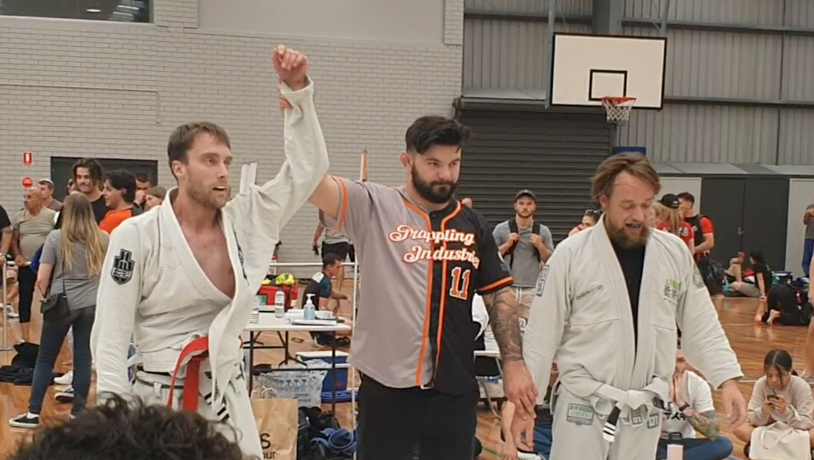
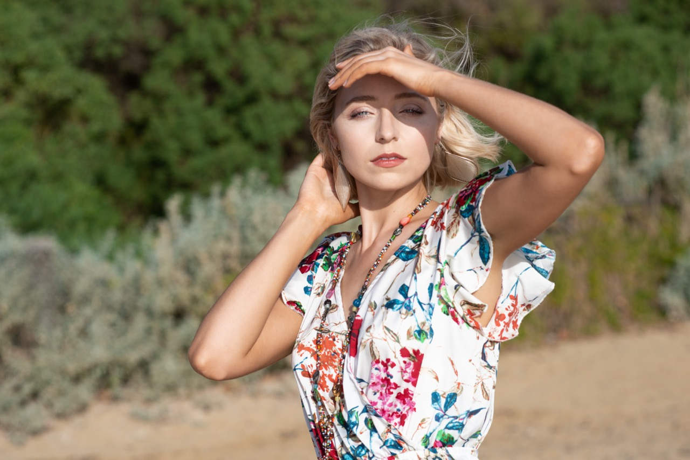

Brazilian Jiu-Jitsu (BJJ) is like playing human Tetris where the goal is to twist your opponent into a shape that definitely wasn't in the instruction manual. It's a world where adults willingly wear pajamas (gi's) and hug it out on the mats, except these hugs can end with someone tapping out for mercy. BJJ turns uncomfortable situations into an art form, teaching you that being squished under a human pancake is just a tactical challenge, not a personal space crisis. With moves named like they're dance moves from an alien disco – "Rear Naked Choke" and "Armbar" – it's less about muscle and more about outsmarting your partner in a physical game of chess. Every session is a mix of sweat, strategy, and the odd accidental nose boop, proving that in BJJ, brains and flexibility triumph over brawn.
Where squinting one eye and pressing a button elevates you from mere mortal to artiste. It's the magical realm where "shooting" people is not only legal but encouraged, and where phrases like "Nice bokeh!" don't get you weird looks. In this world, chasing light becomes an Olympic sport, and everyone's on a quest to capture "golden hours," which, disappointingly, contain no actual gold. A photographer's diet mainly consists of patience, with a side of frustration when that perfect shot is photobombed by a random pigeon. Indeed, photography is the art of turning the mundane into the Instagrammable.
